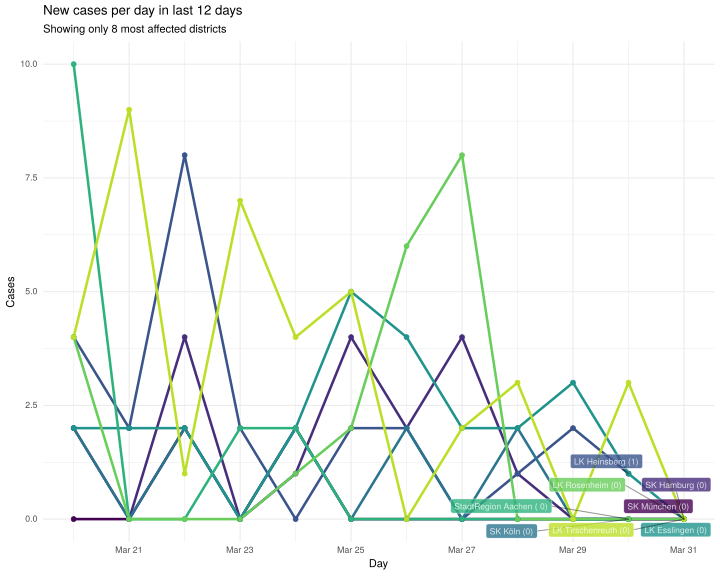
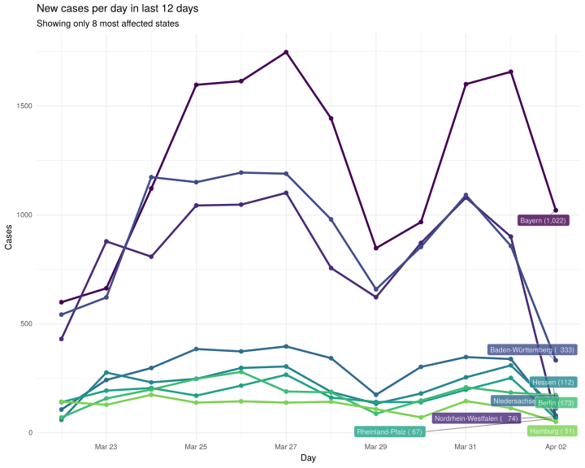
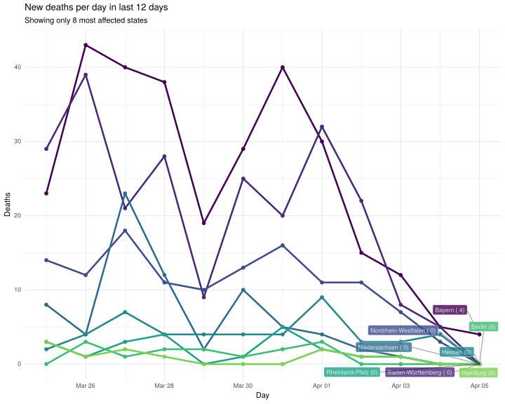
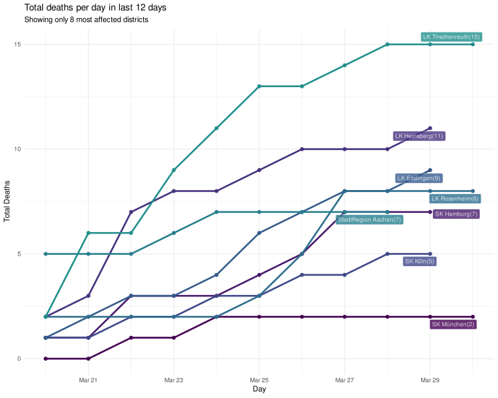
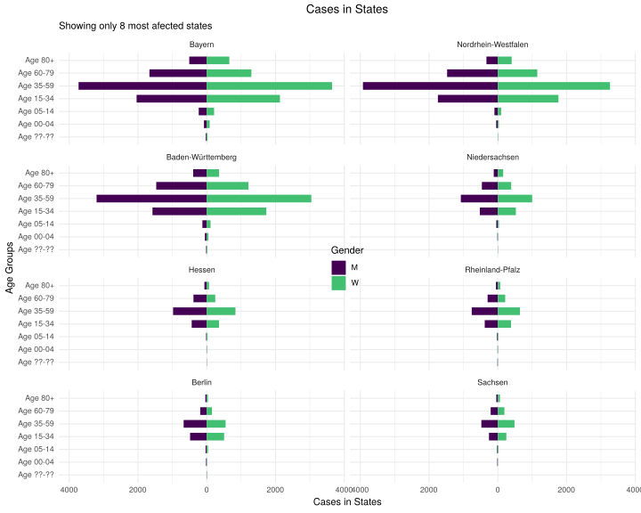
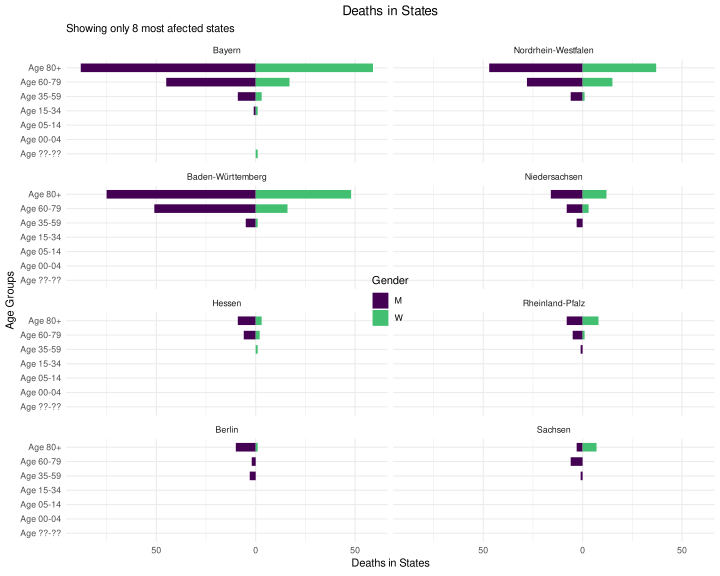
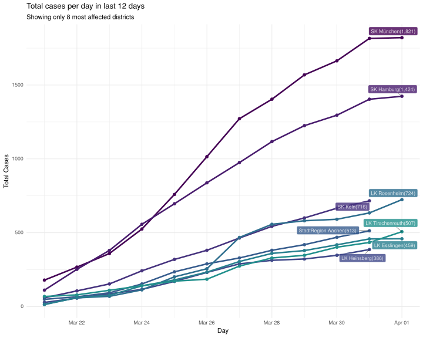
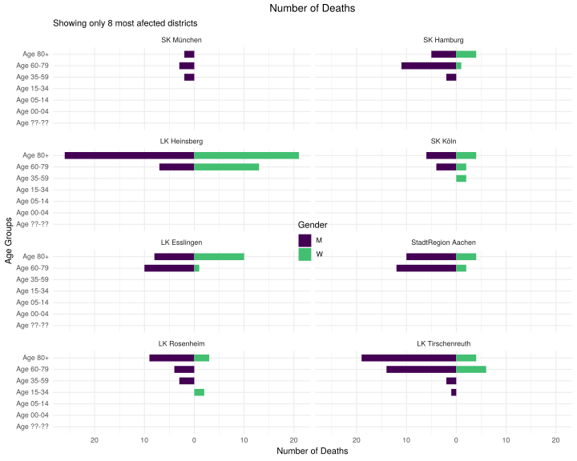

Germany data on district level
COVID-19 District level data from Robert Koch Institute in Germany
The data is updated daily and is downloaded from a ARCGIS REST API using the RKI_COVID19 feature server.
Data from previous dates can be changed over time and update the data files accordingly, therefore object.id for any given row will change daily.
Source code available at averissimo/covid19-rki_de-data.
Other covid-19 related:
Install / Usage
The data is available inside the data/ folder in .csv format.
It can also be used as an R package by installing this repository directly:
> BiocManager::install_github('averissimo/covid19-de_rki-data')
# or
> devtools::install_github('averissimo/covid19-de_rki-data')Update data
To retrieve the lastest yourself use the following function of the R package.
> rki.de.district.data::update.dataset()Note that, as of now, the data is updated by the Robert Koch Institute once a day.
Data visualization
New cases/deaths per day in most affected states/districts
New Cases in states

New Deaths in states

New cases in districts

New deaths in districts

Total cases in last 12 days in most affected states/districts
Total cases in states

Total deaths in states
Showing only 6 states most affected
Total cases in districs
Showing only 6 districs most affected

Total deaths in districs
Showing only 6 districs most affected

Cases by age groups
Cases in states

Deaths in states

Cases in districts

Deaths in districts
